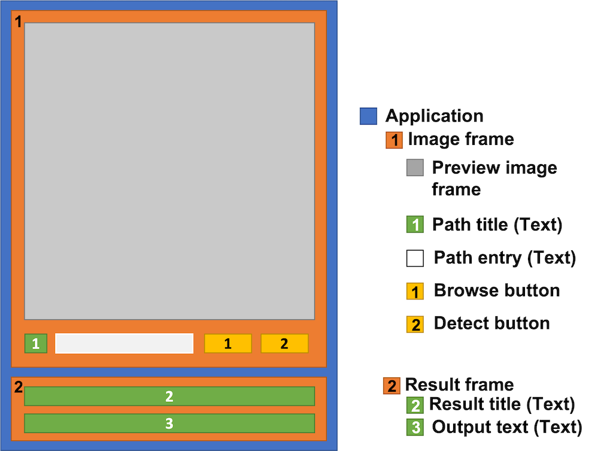
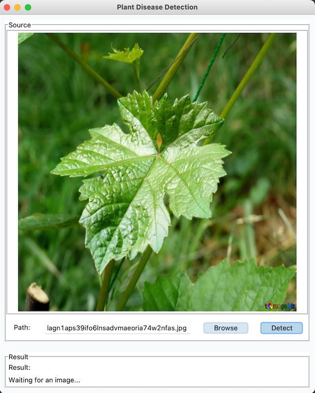

Part 2 - Desktop App
Plant Disease Detection: Part 2 Build a desktop application

In this part, we will create a working desktop application that is being able to browse an image and use the power of machine learning (from part 1) to detect what disease the plant has.
What to expect
What to expect
Note
This project was created and tested on macOS. Some features may not work properly on other os.
Design the application layout and functionalities
In part 1 we have laid down the first building block of a machine learning application. On top of that, in this part, we will create an interface that later will incorporate the machine learning model from earlier. To get our application running we will create a minimal viable product that has all the necessary functionality. The MVP will include:
- Browse an image from our computer
- Show a preview of the image we want the model to detect
- Show the file location where the image is located
- Execute a detection command from the UI
- Show the model prediction result on the UI
Take all the points into account, the application layout should look something like this.

Start coding
Structuring the Project
First, let's take a quick look at what the code structure will look like. To keep everything clean and organized we will follow the oop practice. Knowing that we will create 4 python scripts with their respective functions listed below. Additionally, we will need a folder in the project directory to store the model we have created in part one.
main.py # main file to run the application
root.py # root tasks such as keeping the UI open or the behavior when closing the application.
user_interface.py # handling the user interface such as designs and buttons tasks.
backend.py # handle all none UI tasks, such as image preprocessing, and predicting plant disease.
model_effb0/ # contains the ml model from part 1
... # model files
We can directly put the trained model files from part 1 into the model_effb0 directory
if it hasn't been done yet.
Info
The complete code of the project can be found on GitHub
The Application Manager Code
Our application will start with the main.py script. Its functionality has nothing more than to start the application
and keep it running. In our case, it will initialize the Root class in the root.py script. The code in this script will
only have a few lines as follow;
Complete code of the root.py
There are a couple of things going on in this code. First we have an __init__ function to initialize the
Root(tk.TK) class which inherit from tk.TK. In this function we will set and stored a few general variable of the
application.
self.title("Title"): set application title toPlant Disease Detectionself.geometry("600x720"): set a fix size of the application to 600 x 720 pixels. You can comment this out to have a dynamic size.self.configure(bg="#F7FBFC"): set background color to a light blue colorself.protocol('set_protocol', 'command'): here I want to set a delay when closing the application. When click close the_close_delayfunction will be triggered and give a short time of delay before the application will be terminated.self._ui: create the ui frame to contain all the ui element. Then initializeUserInterfaceclass into it. TheUserInterfaceclass can be found here, we will revisit it also later on in this page.
The second function _close_delay(), is to react when closing the application. In a future version, we might add a
function to save our work before terminating the application. A short delay of 0.5 seconds has been added prior to
closing the app. This function also prevent any errors that might occur on the console causes by closing the app.
Create a GUI with tkinter
This script will be the longest code in our project. If you want to skip all the details you can see the full code in the section below.
Complete code of user_interface.py
Note
All codes related to the GUI of the application is contained in the user_interface.py file.
The final application might look different on some devices and os.
The user_interface.py will control all the UI behavior of the application. From how the app will look like to
what would happen when clicking on a button. The script itself will have a single class named the UserInterface,
which contains of 4 different functions.
UserInterface # UserInterface class
__init__ # initialize the class
_show_image # show image after browsing
_browse_image # triggerd when click browse button
_detect_image # triggerd when click detect button
__init__() function will initialize the user interface and its variables. The code of this function can be seen
under the section below.
init function
def __init__(self, root, *args, **kwargs):
super().__init__(*args, **kwargs)
self.root = root
# Store image and image path
self._image = []
self._image_path = tk.StringVar()
# Frame 1: for load and preview to the app
self._frame_1 = tk.LabelFrame(self.root, text='Source')
self._frame_1.pack(fill='both', expand=True, padx=10, pady=10)
# Preview image box
self._preview_image_frame = tk.LabelFrame(self._frame_1, width=300, height=300)
self._preview_image_frame.pack(fill='both', expand=True, side='top', padx=1, pady=1)
self._in_frame = tk.Label(self._preview_image_frame)
self._in_frame.pack()
# Path label
self._path_label = tk.Label(self._frame_1, text='Path:')
self._path_label.pack(side='left', padx=10, pady=10)
# Entry box
self._path_entry = tk.Entry(self._frame_1, textvariable=self._image_path, width=30)
self._path_entry.pack(side='left', padx=10, pady=10)
# 'Browse' and 'Detect' button
if sys.platform == "darwin":
self._browse_button = tkmac.Button(self._frame_1, text='Browse', bg='#D6E6F2', activebackground='#D6E6F2',
command=self._browse_image)
self._browse_button.pack(side='left', padx=10, pady=10)
self._detect_button = tkmac.Button(self._frame_1, text='Detect', bg='#B9D7EA', command=self._detect_image)
self._detect_button.pack(side='left', padx=10, pady=10)
else:
self._browse_button = tk.Button(self._frame_1, text='Browse', bg='#D6E6F2', command=self._browse_image)
self._browse_button.pack(side='left', padx=10, pady=10)
self._detect_button = tk.Button(self._frame_1, text='Detect', bg='#B9D7EA', command=self._detect_image)
self._detect_button.pack(side='left', padx=10, pady=10)
# Frame 2: displaying model predicted result
self._frame_2 = tk.LabelFrame(self.root, text='Result')
self._frame_2.pack(fill='both', expand=False, padx=10, pady=10)
# Result title text
self._result_label = tk.Label(self._frame_2, text='Result:')
self._result_label.grid(row=0, column=0, sticky='w')
# Predicted result text
self._output_text = tk.Label(self._frame_2, text='Waiting for an image...')
self._output_text.grid(row=1, column=0, sticky='w')
# Initialize Backend class
self._backend = Backend()
We can't finish this part without talking about all the variables in the __init__(). From the design we have
done earlier, we will now convert all those parts into variables. Let's have a closer look into our design again but
with the differences that it has been renamed to variables. Here is the picture of our previous design with all
the variables we have renamed and will be used in the code.
The following is a more detailed explanation of those variables from the picture.
self._frame_1: contains the components to about imagery of the picture that we want to analyzeself._preview_image_frame: contains the component of the sample image frameself._in_frame: preview image frameself._path_label: contains the label text "Path"self._path_entry: contains the label text of the sample image pathself._browse_button: a button for browsing a sample imageself._detect_button: A button for sending a command to start analyzing the health status of the sample pictureself._frame_2: Contains the analyzing results from the model after successfully predict the health status of the imageself._result_label: contains the label text "Result"self._output_text: contains the output text of the analyzationself._backend: storing theBackendclass that is responsible for the analyzation
Since we have cleared out all the variables in the __init__ function, let's take a closer look at the other
functionalities in the script. The class has 3 more different functions beside of the __init__(),
_show_image()_browse-Image()_detect_image()
browse_image() will be the first function that the user has to interact with. It will be triggered when the
user wants to browse a sample picture. After successfully selecting an image, the function will store the image
path into a variable called _image_path then it will trigger the _show_image() function to show the user a
visualization of the selected picture.
browse function
show_image() will be automatically triggered by the _browser_image(). The function will resize the image
to fit into the frame and show the image on the GUI. Besides resizing and showing the picture, the function
will also store the image into the _image variable for further actions.
show image function
detect_image() is a function to trigger the analysis process of the health status of the image. The function
will be activated when the user clicked on the Detect button. The function will then call another function in
the backend class, that has been earlier initialized, to start to analyze the sample image. The function will then
receive an output from the backend class and show the result on the UI.
detect image function
Actually, at this point we can try to run our app. However, we need to comment out the lines that are related to
the backend.py first. Otherwise, it will throw an error. For now, we should be able to browse a sample image and
display it on the preview frame.
Caution
Different devices and os may show slightly different results

Code the Backend Algorithm
The backend.py contains and runs the heart of the project. Despite its importance, it hasn't a complex
functionality. Instead, we have finished all complexations in the first part
when we create the machine learning model.
The script will contain a class that in it will have 4 simple functionalities as listed as follow;
Backend # Backend class
__init__ # initialize the class
_load_model # load the ml model when starting the app
predict_image # initialize image prediction
_prepare_image # prepare the input image for the ml model
If you want to skip all the details and only want the codes, you can find the complete code in the section below.
Complete code of the backend.py
import numpy as np
import tensorflow as tf
CLASS_NAME = ['Potato___healthy', 'Tomato___healthy', 'Corn___Common_rust',
'Apple___Apple_scab', 'Soybean___healthy',
'Tomato___Tomato_mosaic_virus', 'Tomato___Septoria_leaf_spot',
'Tomato___Spider_mites Two-spotted_spider_mite', 'Tomato___Late_blight',
'Grape___healthy', 'Cherry___Powdery_mildew', 'Apple___healthy',
'Pepper,_bell___Bacterial_spot', 'Potato___Late_blight',
'Corn___Northern_Leaf_Blight', 'Corn___healthy',
'Orange___Haunglongbing_(Citrus_greening)', 'Apple___Black_rot',
'Tomato___Target_Spot', 'Potato___Early_blight', 'Squash___Powdery_mildew',
'Corn___Cercospora_leaf_spot Gray_leaf_spot', 'Raspberry___healthy',
'Tomato___Tomato_Yellow_Leaf_Curl_Virus', 'Peach___healthy',
'Tomato___Early_blight', 'Grape___Leaf_blight_(Isariopsis_Leaf_Spot)',
'Strawberry___healthy', 'Blueberry___healthy', 'Peach___Bacterial_spot',
'Pepper,_bell___healthy', 'Grape___Black_rot', 'Cherry___healthy',
'Tomato___Bacterial_spot', 'Background_without_leaves', 'Strawberry___Leaf_scorch',
'Grape___Esca_(Black_Measles)', 'Tomato___Leaf_Mold', 'Apple___Cedar_apple_rust']
class Backend:
self._image_shape = (224, 224)
# Create a relative path to the saved model directory
if getattr(sys, 'frozen', False) and hasattr(sys, 'MEIPASS'):
application_dir = sys._MEIPASS
else:
application_dir = os.path.dirname(os.path.abspath(__file__))
self._model_path = os.path.join(application_dir, 'model_effnet-lite4')
# Reference to the model
self._model = None
# Load model
self._load_model()
def _load_model(self):
self._model = tf.keras.models.load_model(self._model_path)
def predict_image(self, path):
img = self._prepare_image(path)
prob = self._model.predict(np.asarray([img]))[0]
c_idx = np.argmax(prob)
prob_f = round(prob[c_idx] * 100, 2)
return f"Image category: {CLASS_NAME[c_idx]} | Probability: {prob_f}%"
def _prepare_image(self, path):
img = tf.io.read_file(path)
img = tf.io.decode_image(img, channels=3)
img = tf.image.resize(img, size=[self._image_shape[0], self._image_shape[1]])
img = img/225.
return img
CLASS_NAME is a static list that contains all the category names of the dataset which has been used to train
the machine model in part 1. For the time being, the class names are being hardcoded.
CLASS_NAME variable
CLASS_NAME = ['Potato___healthy', 'Tomato___healthy', 'Corn___Common_rust',
'Apple___Apple_scab', 'Soybean___healthy',
'Tomato___Tomato_mosaic_virus', 'Tomato___Septoria_leaf_spot',
'Tomato___Spider_mites Two-spotted_spider_mite', 'Tomato___Late_blight',
'Grape___healthy', 'Cherry___Powdery_mildew', 'Apple___healthy',
'Pepper,_bell___Bacterial_spot', 'Potato___Late_blight',
'Corn___Northern_Leaf_Blight', 'Corn___healthy',
'Orange___Haunglongbing_(Citrus_greening)', 'Apple___Black_rot',
'Tomato___Target_Spot', 'Potato___Early_blight', 'Squash___Powdery_mildew',
'Corn___Cercospora_leaf_spot Gray_leaf_spot', 'Raspberry___healthy',
'Tomato___Tomato_Yellow_Leaf_Curl_Virus', 'Peach___healthy',
'Tomato___Early_blight', 'Grape___Leaf_blight_(Isariopsis_Leaf_Spot)',
'Strawberry___healthy', 'Blueberry___healthy', 'Peach___Bacterial_spot',
'Pepper,_bell___healthy', 'Grape___Black_rot', 'Cherry___healthy',
'Tomato___Bacterial_spot', 'Background_without_leaves', 'Strawberry___Leaf_scorch',
'Grape___Esca_(Black_Measles)', 'Tomato___Leaf_Mold', 'Apple___Cedar_apple_rust']
__init__() is where all the variables are being stored at the time of the initialization. It will be called shortly
after when the application has started. The variables are as the following;
self._image_shape: image size that confines to the image input size of the modelself._model_path: stored a reference to the directory that contains the modelself._model: store a reference to the model. Has been called at the initialization through the_load_model()self._load_model(): is being called at the initialization to get the model ready to run
init function
_load_model() has the functionality to load our machine learning model and store it in the self._model variable.
It might take a while to load, depending on the size and complexity of the model.
load_model function
predict_image() is a function that will be called from the user_interface.py script when the user has
clicked the Detect button on the GUI. The function will trigger the _prepare_image() function,
to load and preprocess the image to a proper size for the model. Then, the function will predict the health
status of the sample image and convert its result into a sentence prior to returning the output. The output
will be sent back to its original function _detect_image() in the UserInterface class and displaying it to
the user.
Here is an example of the result that will be returned: Image category: Soybean___healthy | Probabilty: 94.45%
predict_image function
**_prepare_image(): will read the image, from its stored location, and resize it to match the same size and dimension
as of the input size required by the model. It has been recommended that the input image size for the model should
have the same size as the one that has been used to train the model.
prepare image function
Run the Finished Application
Now that we finally finished the app, let's run and see what we have accomplished.
As we can see at the bottom of the application, a prediction result has been shown as we have expected. HOWEVER, the detection result itself hasn't been quite correct yet. The image that has been used is of a grape leaf, but the model has detected it as a tomato leaf . By knowing this, we should go back and reevaluate the machine learning model from part 1 to see how it can be improved.
What's next
We have now reached the end of this part. It was quite a journey of creating such a desktop application. For now, we can only use it through an IDE which isn't so convenient. In the next part 3, we will learn how to convert our code into an executable application and make it independent from an IDE.